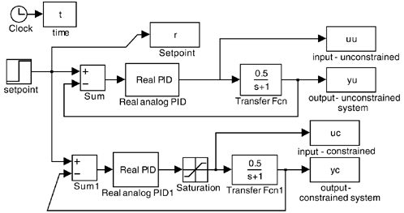
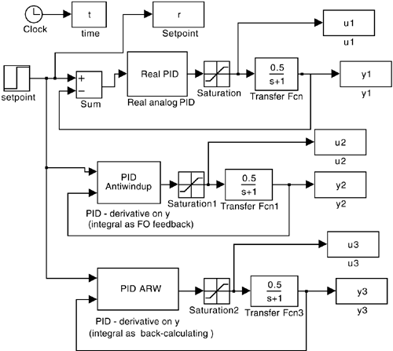
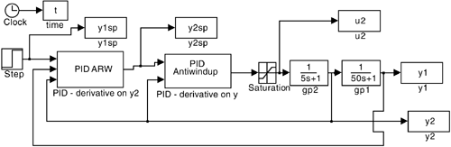
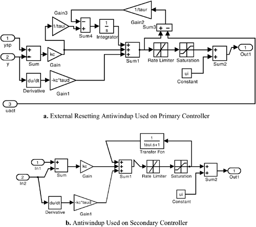
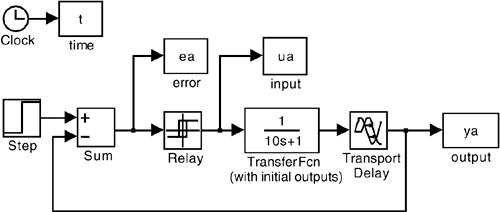

| [ Team LiB ] |
|
11.7 Implementing PID Enhancements in SimulinkSIMULINK has a number of standard features that make it easy to perform simulations for the control strategies developed in this chapter. Saturation and relay blocks, for example, can be found in the Discontinuities SIMULINK library in MATLAB version 6.5 (Release 13). Constrained vs. UnconstrainedThe simulation results in Figure 11-2 were generated using the SIMULINK .mdl diagram shown in Figure 11-16. Figure 11-16. Comparison of constrained and unconstrained processes to a step setpoint change. ARWThe antiwindup results presented in Figure 11-4 were generated using the SIMULINK .mdl diagram shown in Figure 11-17. The cascade results of Figures 11-7, and 11-9 were generated using the SIMULINK .mdl diagrams shown in Figures 11-18 and 11-19. Figure 11-17. Comparison of ARW strategies with "classical" PID. Figure 11-18. SIMULINK cascade-control simulation with antiwindup on both controllers. Figure 11-19. Unmasked view of anti-windup strategies used for the cascade-control simulations. AutotuningThe autotuning simulation shown in Figure 11-12 was generated using Figure 11-20. Figure 11-20. SIMULINK .mdl diagram for autotuning simulation. |
| [ Team LiB ] |
|